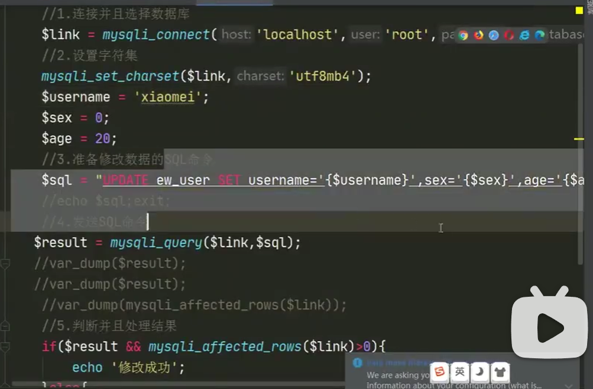
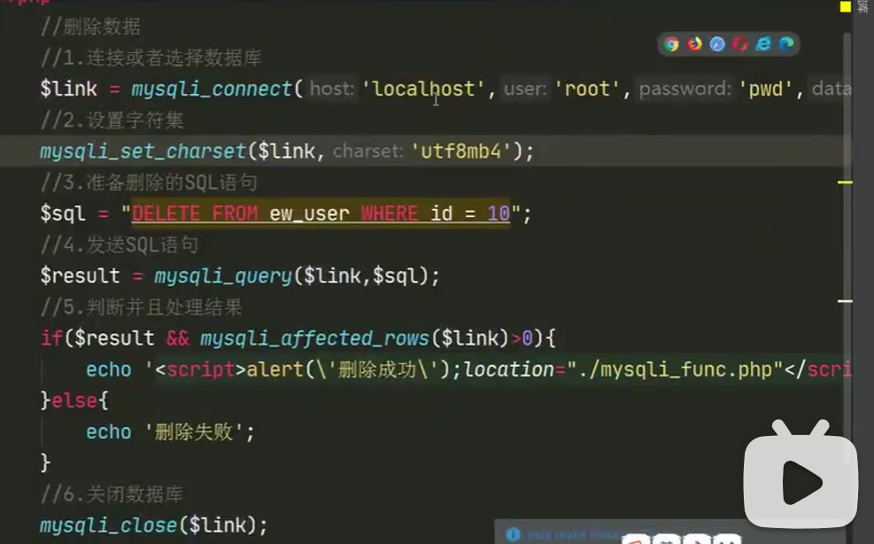
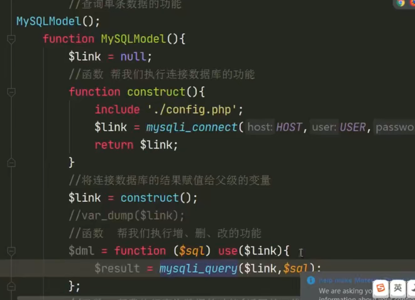
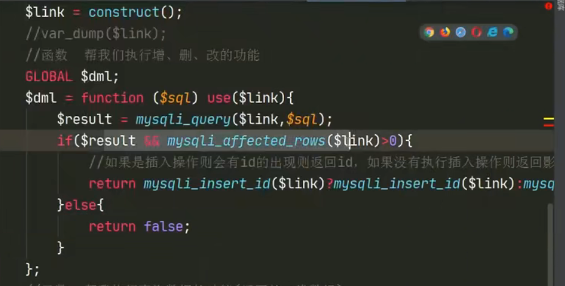

PHP链接MySQL
用PHP链接Mysql执行操作
MySQLI
-
可直接安装
wamp，代表Windows、Apache、MySQL和PHP。这是一个软件堆栈。 -
mysqli的扩展安装之后才可用php链接mysql -
<?php phpinfo(); ?>phpinfo()函数可以显示出PHP 所有相关信息。是排查php是否出错或漏配置模块的主要方式之一
php基本语法D
@错误控制操作符，当表达式加上@时，若该表达式错误，所产生的错误信息不会被爆出来，表达式生成的错误信息将保存在变量$ php_errormsg里，每个错误都会覆盖此变量
'{php变量}'把变量用花括号括起来，并且用单引号包起来，表示把这个变量解析成字符串的形式,这样才能加入到sql语句里php文件里可以写html标签,
echo 'html标签';
html中写sql语句需要<php? 变量名?>
php排错时要从sql语句开始排错。
$sql=""; echo $sql;exit;然后把显示的sql语句赋值粘贴进mysql执行，看成不成功。
die(message)在退出脚本前显示message信息php中，用
.来实现字符串和变量的链接"它的密码是".$key."值"PHP中反引号的作用
执行系统命令
echo
ipconfig；内涵SQL语句的关键字时
$sql = “select
user,username fromContent”;匿名函数（闭包函数）
实现php闭包既可以读取函数内部的变量，同时还可以将变量始终保存在内存中，使得即使函数执行完毕，变量也将一直存在。
子函数可以使用父函数中的局部变量
PHP中
array（）只写array()说明新建了一个新的数组，php里有索引数组、关联数组、多维数组。

使用PHP进行数据库插入操作
PHP中写sql语句，要把sql语句用双引号括起来并写入一个变量里
mysqli_connect('数据库所在地址'，’用户名‘，’密码‘，’数据库名‘)–>数据链接函数
$link=函数1 or die（）来判断函数1的执行是否有错，有错则会爆出所有信息。加@不爆出。–>出错怎么办
mysqli_query（链接的数据库赋给的变量，sql语句的变量），发送一条SQL语句到数据库服务器。insert插入返回布尔值，执行成功为true，失败为false–>发送sql语句函数
mysqli_affected_rows(链接的数据库赋给的变量)–>获取数据影响行函数
mysqli_insert_id(链接的数据库赋给的变量)，返回的是添加的哪一行的id
mysqli_close(链接的数据库赋给的变量)–>关闭数据库

使用PHP进行数据库查询操作
mysqli_num_rows(问答函数出来的对象)，返回值是对象的行数
mysqli_query(链接的数据库的变量)，对于查询而言返回的是一个对象
mysqli_fetch_assoc(问答函数出来的对象)获取一行作为关联数组返回。
如果数据库里什么都没有，就会返回NULL


使用PHP进行数据库修改

使用PHP进行数据库删除

把删除函数可以写到查询的那个文件（func.php）的表格里：

delete.php中写入sql语句的传参也要改一下：
这里能用$_GET变量是因为我们发现，这个网页是以get方式传参的。

函数的封装（Model模块）
关联数据库的函数

增删改功能的函数：
这里有一个正则表达式，此函数是一个闭包函数，用来在这个函数里使用父函数的变量，注意格式变量=function(用户给的变量，这里是sql语句) use(传进来的父函数的变量)

查找的函数：

统计行数的函数：

查询单条数据功能：

关闭数据库的添加语句：
注意代码逻辑。
预处理
-
目的：防止SQL注入，且执行效率快
就是把自己的sql语句拼接进后台所写的SQL语句里
而预处理就不是字符串拼接的方式
-
基本原理：SQL语句不是一条一条的发送，而是直接存储在SQL数据库中（最后程序结束还是要释放），等待那个值的传入。

-
具体实现
type中
i代表int，s代表string。需要准备预处理和释放预处理。
用
?占位。

推广：（若查询的东西变多以后）

总结：
重点掌握：